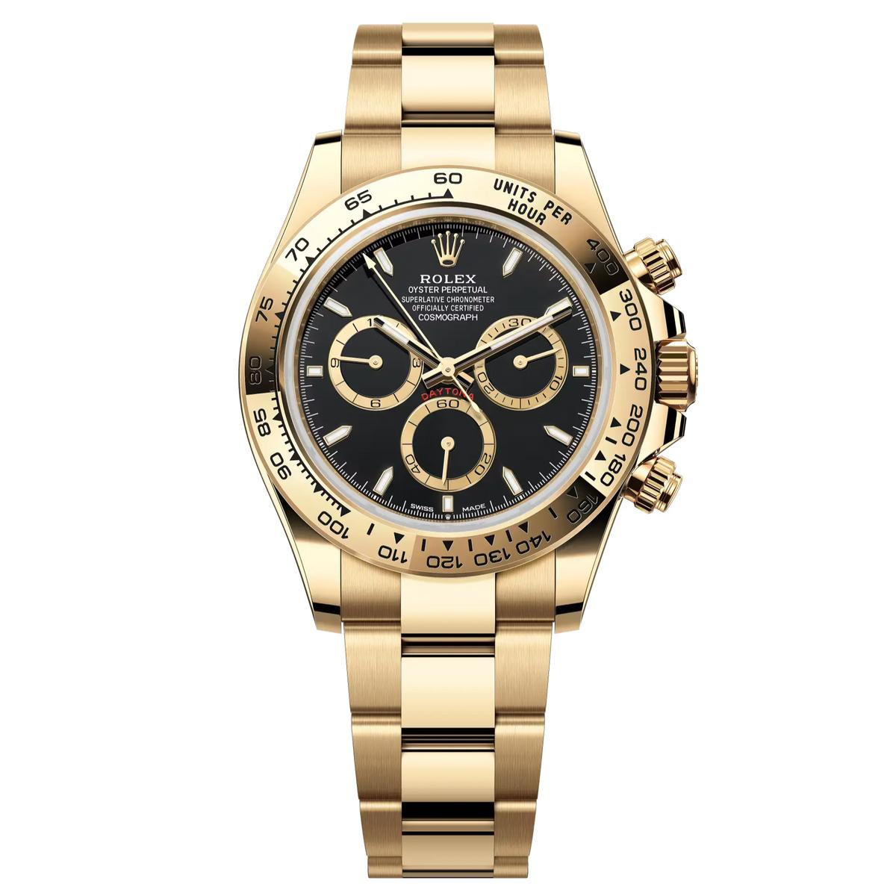

INFORMACION

¿Cómo funcionan los relojes? El funcionamiento depende del tipo de reloj: De cuarzo: utiliza una pila y las vibraciones de un cristal de cuarzo para medir el tiempo con precisión. Mecánico: utiliza energía almacenada en un resorte y un mecanismo que regula el movimiento. Digital electrónico: emplea circuitos electrónicos para medir y mostrar la hora. Inteligente: combina componentes electrónicos, sensores y software; algunos modelos se conectan al móvil.